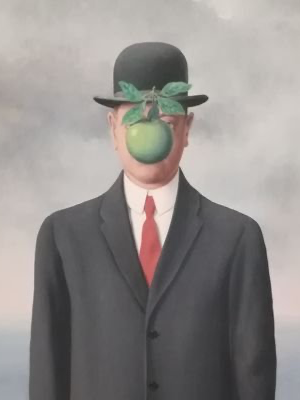
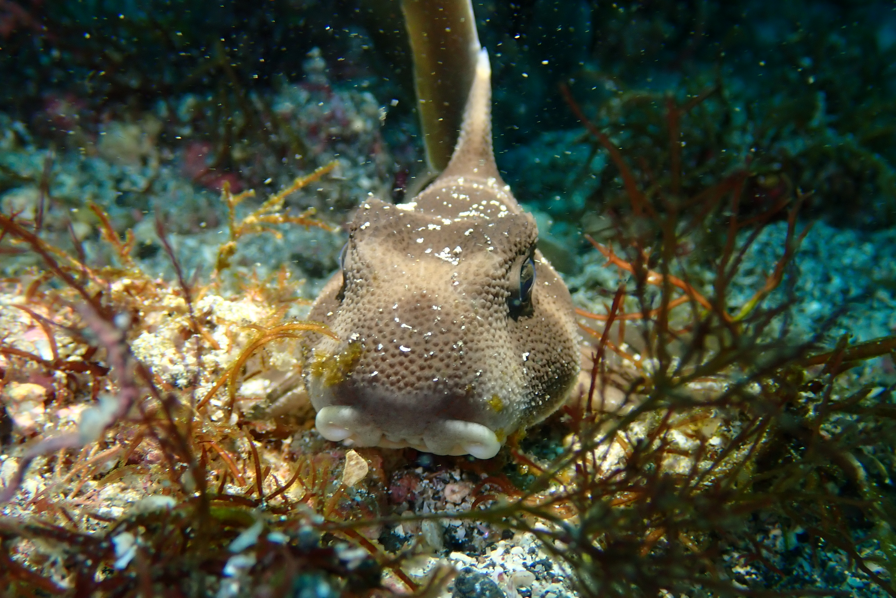
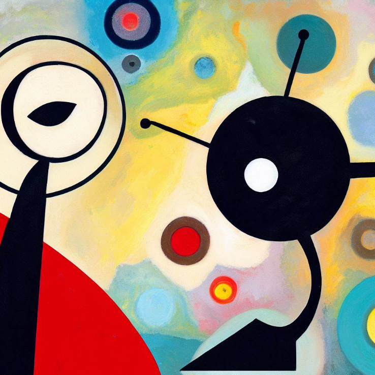

2022-08-01
2023-09-02
氏名
山崎貴大（やまざきたかひろ）

略歴と研究概要
2019年3月、横浜国立大学工学府機能発現工学専攻修了、博士（工学）
同年4月、名古屋大学大学院工学研究科マイクロ・ナノ機械理工学専攻、日本学術振興会特別研究員PD
2021年3月－2022年3月、米国メリーランド大学材料科学工学専攻、博士研究員
2022年4月、東京理科大学研究推進機構総合研究院、嘱託助教着任
同年、物質・材料研究機構磁性・スピントロニクス材料研究拠点、外来研究院兼任
磁気弾性機能を有した新規材料創製、磁気バルクハウゼンノイズの計測システム構築、
機械学習や放射光解析を用いた磁気機能解明に関する研究に従事
同年4月、名古屋大学大学院工学研究科マイクロ・ナノ機械理工学専攻、日本学術振興会特別研究員PD
2021年3月－2022年3月、米国メリーランド大学材料科学工学専攻、博士研究員
2022年4月、東京理科大学研究推進機構総合研究院、嘱託助教着任
同年、物質・材料研究機構磁性・スピントロニクス材料研究拠点、外来研究院兼任
磁気弾性機能を有した新規材料創製、磁気バルクハウゼンノイズの計測システム構築、
機械学習や放射光解析を用いた磁気機能解明に関する研究に従事
研究内容
趣味
・登山
・スキューバダイビング
・絵画（露カンディンスキー・西ミロ）
・お酒（アイラウイスキー）
・ネットフリックス（米ドラマ・ビッグバンセオリー）
・米国個別株
・Ethereum Name Service (ENS) コレクション
・スキューバダイビング
・絵画（露カンディンスキー・西ミロ）
・お酒（アイラウイスキー）
・ネットフリックス（米ドラマ・ビッグバンセオリー）
・米国個別株
・Ethereum Name Service (ENS) コレクション


得意
・書道（毛筆5段、硬筆3段）
・野球（部活動10年）
・カメラ（エアカナダ2015年2月カレンダー採択など）
・Webページ作成（HTML、CSS、Javascript）
・野球（部活動10年）
・カメラ（エアカナダ2015年2月カレンダー採択など）
・Webページ作成（HTML、CSS、Javascript）
不得意
・電車（乗り過ごしがち）
・事務処理（全てオンライン化希望）
・険悪な雰囲気
・事務処理（全てオンライン化希望）
・険悪な雰囲気
スキ
・研究談義
・読書
・深夜
・サウナ
・すき焼き
・パイナップル
・読書
・深夜
・サウナ
・すき焼き
・パイナップル
キライ
・細かいルール
・満員電車
・天井の低い部屋（頭をぶつける）
・満員電車
・天井の低い部屋（頭をぶつける）
英語の勉強法
・CNN10を毎日見る
字幕なし、字幕あり、シャドーイングの3度見
・Native Campでオンライン英会話
・ELSA Speak appで発音の矯正
L/Rとf/vの発音はしっかりやる
・Lingvistで単語の暗記
・Kendra's Language Schoolの「英語の脳を作る・シャドーイング練習500–基本編」など
・ただし、結局は英語圏への長期留学が一番
マスターするのに1年じゃ不十分かも
作文の文化・背景を知ると表現力に多様性が増します。
字幕なし、字幕あり、シャドーイングの3度見
・Native Campでオンライン英会話
・ELSA Speak appで発音の矯正
L/Rとf/vの発音はしっかりやる
・Lingvistで単語の暗記
・Kendra's Language Schoolの「英語の脳を作る・シャドーイング練習500–基本編」など
・ただし、結局は英語圏への長期留学が一番
マスターするのに1年じゃ不十分かも
作文の文化・背景を知ると表現力に多様性が増します。
論文の読む頻度・書く頻度
・読むのはほぼ毎日
arXiv、Nature系雑誌、Phys.org、その他専門誌など
1本は5-10分で方法論とメイン成果をしっかり読み込む
あとは検索のためのアブスト読みを10-20本程度
・書くのはほどほど
早朝出勤前に30分図面作成
通勤時間で文章の原案作成
図面・ストーリーが決まれば、残りは1週間で一気に書き上げる
更なるアウトプットのためブログ・論文紹介、Xに投稿
息を吸うようにアウトプット（論文執筆・X投稿）できるようになるのが目標
arXiv、Nature系雑誌、Phys.org、その他専門誌など
1本は5-10分で方法論とメイン成果をしっかり読み込む
あとは検索のためのアブスト読みを10-20本程度
・書くのはほどほど
早朝出勤前に30分図面作成
通勤時間で文章の原案作成
図面・ストーリーが決まれば、残りは1週間で一気に書き上げる
更なるアウトプットのためブログ・論文紹介、Xに投稿
息を吸うようにアウトプット（論文執筆・X投稿）できるようになるのが目標
座右の銘
・Follow your intuition
直感に従うことが大事（フェリンガ博士より）
・事実は小説よりも奇なり、真実は仮説よりも奇なり
仮説（想定範囲）を越えた結果に対するアプローチが大事
・実るほど頭を垂れる稲穂かな
若いうちは突っ張ることも大事
上の立場になったら謙虚になることも大事
（吉野彰博士より）
・巨人の肩の上に立つ
先人の功績に感謝し継承することが大事
後進のためにも自分の成果を形として残すことが大事
直感に従うことが大事（フェリンガ博士より）
・事実は小説よりも奇なり、真実は仮説よりも奇なり
仮説（想定範囲）を越えた結果に対するアプローチが大事
・実るほど頭を垂れる稲穂かな
若いうちは突っ張ることも大事
上の立場になったら謙虚になることも大事
（吉野彰博士より）
・巨人の肩の上に立つ
先人の功績に感謝し継承することが大事
後進のためにも自分の成果を形として残すことが大事